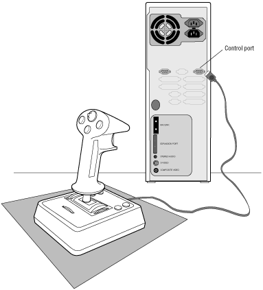

Figure 1: Installing the extended joystick.
Some extended joysticks have a female DB-9 connector and therefore can be daisy-chained with other control port peripherals. See Daisy-chaining peripherals for more information.
Extended Joystick Driver
The extended joystick driver is included in the operating system software and installs automatically when you install the operating system. Updates are provided on the 3DO InfoServer bulletin board (415/261-3405). Contact the Developer Technical Support staff on the InfoLine (415/261-3400) for additional information if needed.